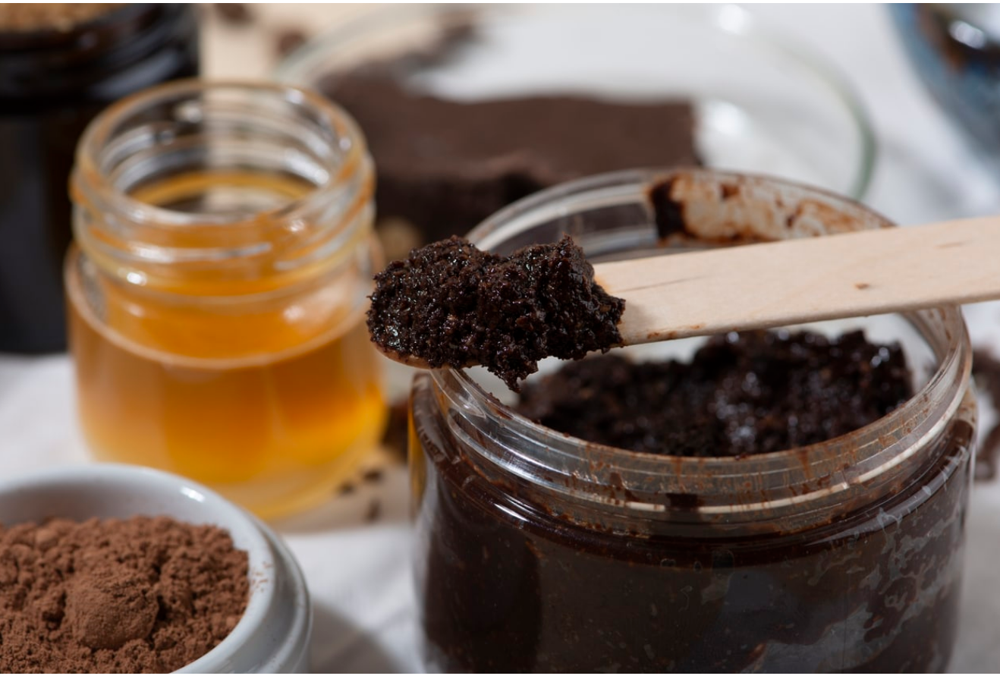
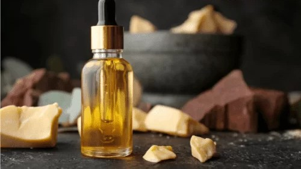
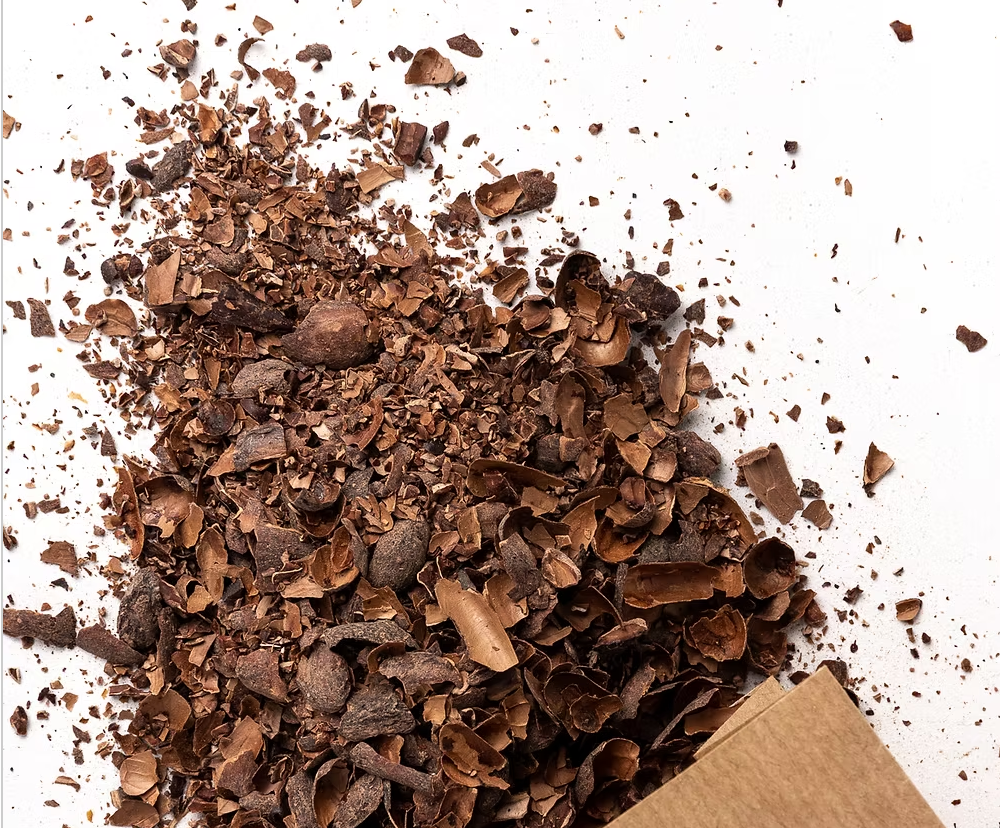

Blog - Conseils & Bien-être avec le cacao

Comment utiliser la poudre de cacao pour la peau ?
Découvrez les vertus antioxydantes de la poudre de cacao pour vos soins maison : masque purifiant, exfoliant doux et éclat du teint naturel.

Gommage maison au cacao
Mélangez sucre, miel, poudre de cacao et huile de coco pour un gommage 100% naturel, exfoliant et gourmand. À tester chez vous !

Bienfaits de l'huile de cacao sur les cheveux
Nutrition intense, protection, brillance naturelle : tout ce qu’il faut savoir sur l’application de l’huile de cacao pour cheveux secs ou abîmés.

Boire une infusion de fèves de cacao
Calmante, antioxydante et sans sucre : l’infusion de fèves de cacao est une boisson bien-être simple à préparer. Suivez nos astuces !